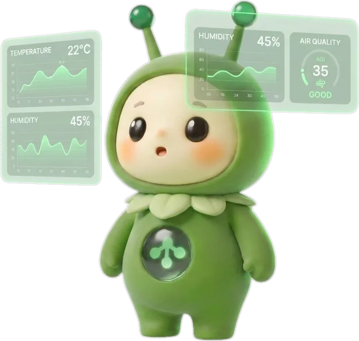
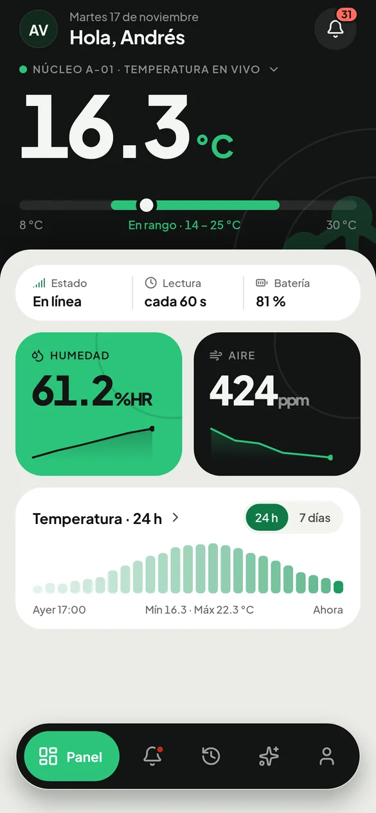
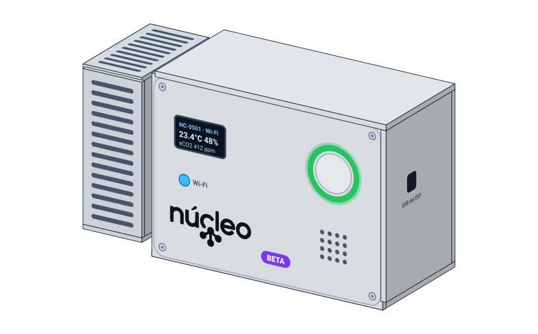
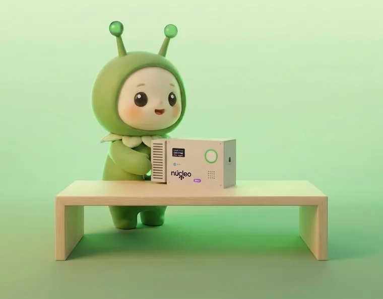
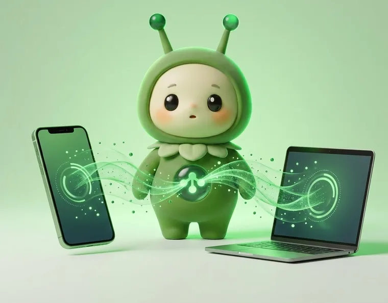
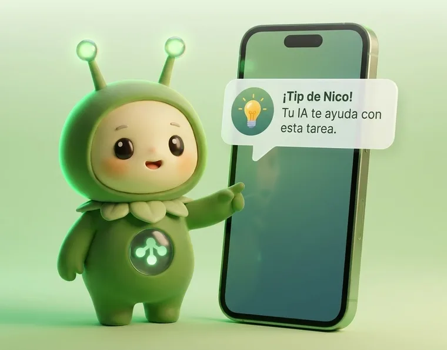

Alertas con seguimiento
Cada lectura fuera de rango crea una alerta con su línea de tiempo: detectada, notificada, atendida o descartada con nota. Llega por correo, push y en pantalla.
Núcleo mide la temperatura, la humedad y la calidad del aire de tus áreas, te avisa en cuanto algo se sale de rango y Nico AI te lo explica en palabras simples. Todo en una plataforma web, una app móvil y un dispositivo que cabe en tu mano.
¡Hola! Me llamo Nico. Estoy en cada dispositivo, en la web y en la app. Leo los sensores de tus espacios, vigilo que todo esté en rango y, cuando algo cambia, te lo cuento como lo haría un compañero de equipo: claro y sin tecnicismos.
A lo largo de esta página te voy a explicar cada parte de Núcleo. ¿Vamos?
Dispositivos, histórico, alertas, reportes y Nico AI, con roles por empresa y área para que cada quien vea lo que le toca.




Un ESP32-S3 con sensores ambientales, pantalla, luces de estado y batería, en una carcasa de 14.4 × 5.5 × 8 cm que se cuelga en la pared.

Toca un punto para ver el detalle.
Cada lectura fuera de rango crea una alerta con su línea de tiempo: detectada, notificada, atendida o descartada con nota. Llega por correo, push y en pantalla.
Rango normal y de advertencia por variable, editables desde la web.
Programados por día, semana o mes, enviados por correo.
Administrador, supervisor, analista y operador, cada uno con su alcance.
Segundo factor, sesiones por equipo y bitácora de auditoría.
API con tokens y webhooks para conectar tus sistemas.
Histórico y alertas en CSV cuando los necesites.
Sin cables raros ni instaladores: en unos minutos tu primer espacio ya está midiendo.

Ponlo en el área que quieres vigilar, conéctalo por USB-C y únelo a tu Wi-Fi. Luego regístralo en la plataforma con el código que muestra su pantalla.
Nico: «Lejos del sol directo y de las salidas de aire, porfa.»

Cada minuto llegan la temperatura, la humedad y la calidad del aire a la web y a la app. Ajusta los umbrales y elige quién recibe cada alerta.
Nico: «Si algo se sale de rango, te aviso al momento.»

Atiende las alertas, pídele a Nico un resumen o un reporte y toma decisiones con las cifras reales de tus espacios.
Nico: «Pregúntame lo que quieras, como se lo dirías a un compañero.»
Para más de 25 dispositivos, varias plantas o requisitos propios de seguridad y retención.
Precios en pesos mexicanos, más IVA. El dispositivo Núcleo se adquiere aparte ( por equipo, pago único) o en comodato desde el plan Bosque.
El Núcleo sigue midiendo, guarda las lecturas con su hora y las envía al volver la conexión. Mientras tanto, la luz y el zumbador avisan en el lugar con el último umbral que recibió.
Cada pregunta que me haces en el chat de la web o la app. Las respuestas que salen solo de reglas y cifras también cuentan. Si llegas al límite del día o de la hora, sigues viendo todo el panel; solo esperas a que se renueve.
Las lecturas de tus dispositivos, los reportes PDF y los archivos que adjuntas. Una lectura cada minuto por equipo ocupa alrededor de 0.5 GB al año.
La plataforma funciona en el navegador. La app de Android se descarga desde app.bynucleo.com. El Núcleo solo necesita Wi-Fi de 2.4 GHz y corriente por USB-C.
Solo las personas de tu empresa, según su rol y área. La comunicación va cifrada de punta a punta y la IA corre en nuestro propio servidor.
Sí, cuando quieras. Al subir de plan los nuevos límites aplican al momento; al bajar, desde el siguiente periodo.
Conecta tu primer Núcleo gratis y recibe tu primera alerta en minutos.